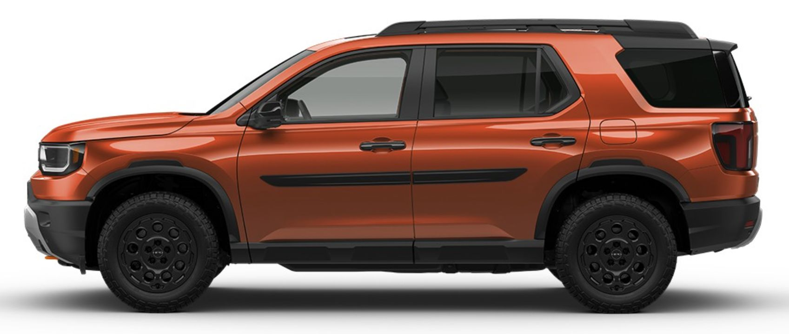
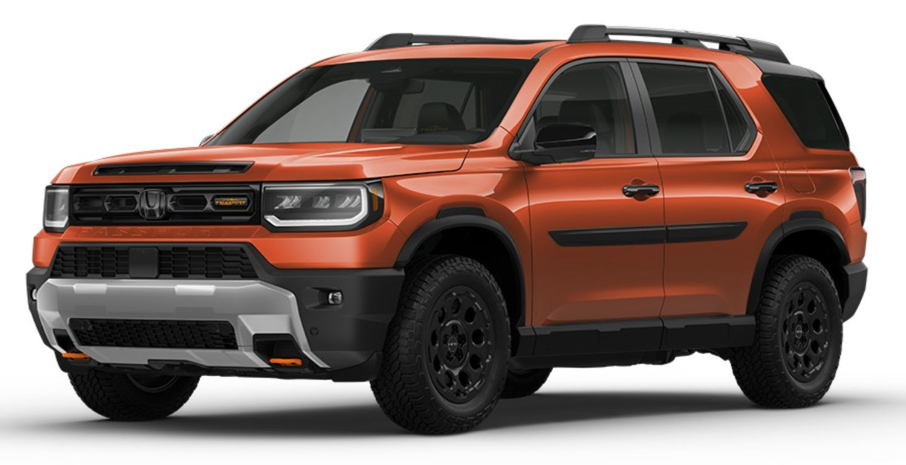
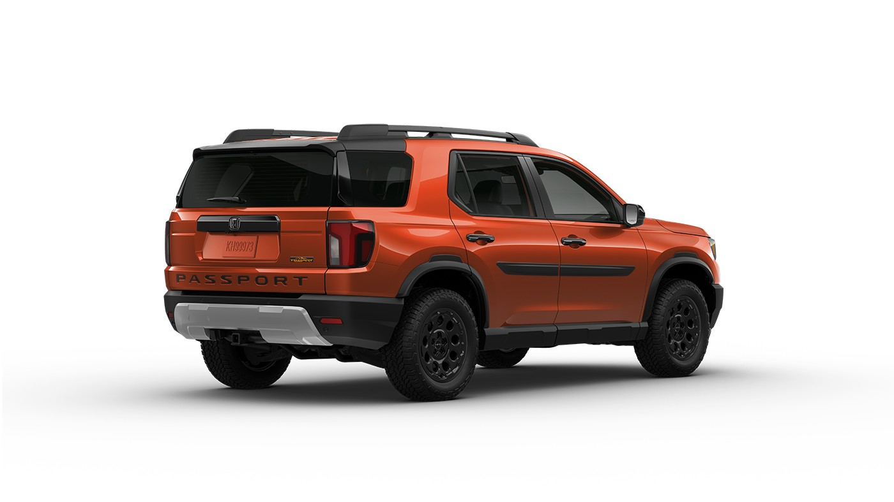
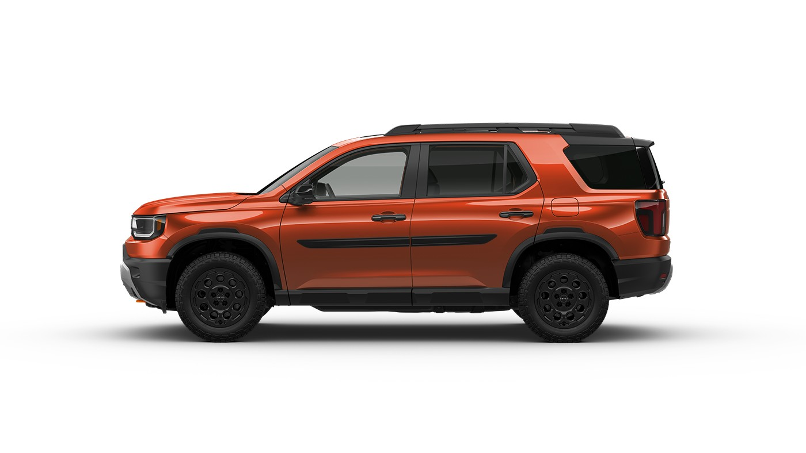
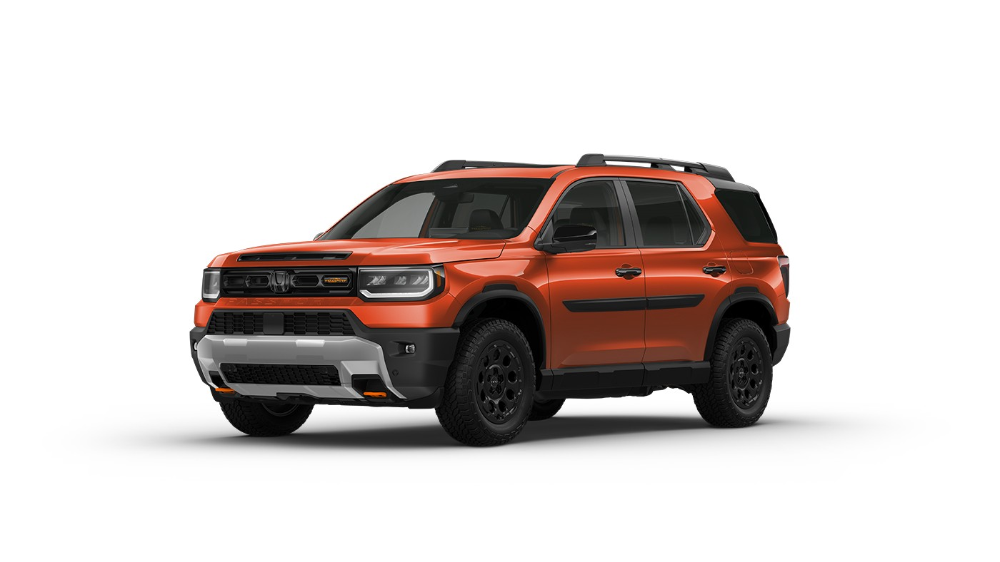
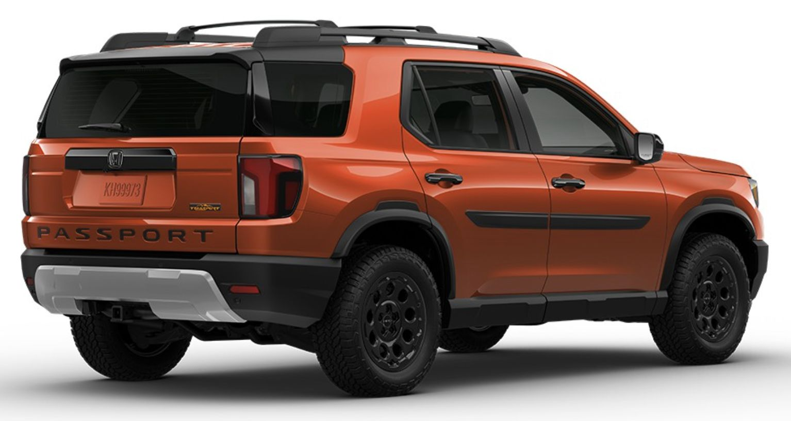
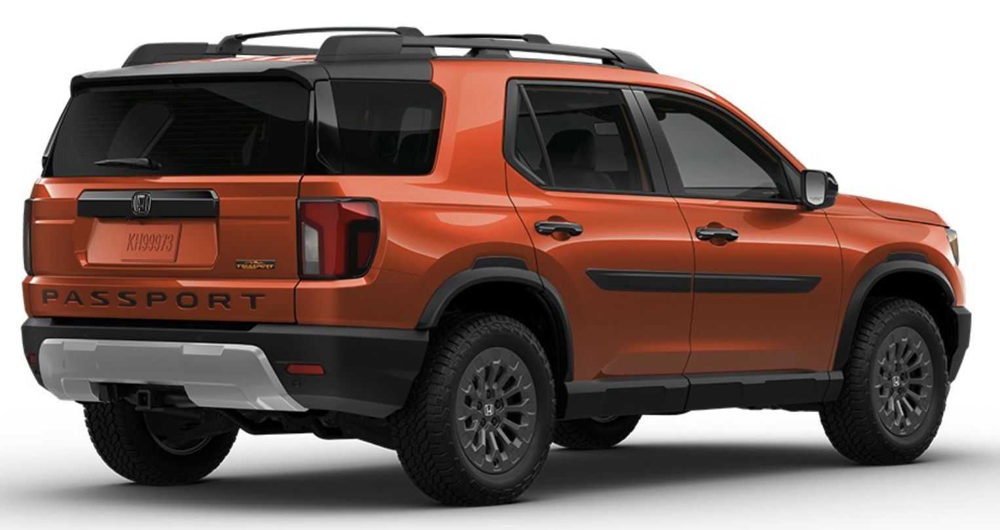
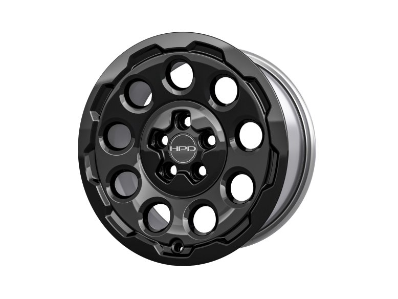
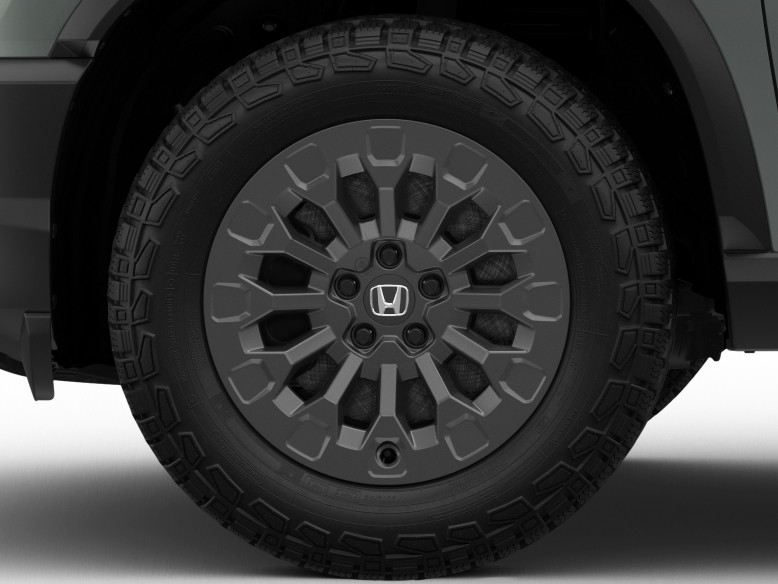

Name Ideas:
- Wombat
- The Wombat
- The Orange Wombat
- The Working Wombat
details
| Cropped |
|  |  |
| Downloaded |
 |
 |
 |
| Wheels Upgrade |
 |
 |
| Added, 18-in Rugged Black Alloy Wheels |
Original |
 |
 |
Tim's 2026 Honda
Passport TrailSport
- Midsize SUV, 2-row (5 passengers)
- ~21 MPG, 3.5L V6 (285 hp),
Standard All-Wheel Drive,
10-speed Automatic
- Up to 5,000 lbs Towing Capacity
- 191.5" x 79.4" outside dimentions
- 83.8 cubic feet Cargo Space
- 119.1 cubic feet Passenger Volume
Included in build:
- + (Design/Wheels) 18-in Rugged Black Alloy Wheels $1,869 *
- + (Accessories/Exterior) Body Side Molding $150
- + (Accessories/Exterior) Crossbars $260 (Not installed)
- + (Accessories/Exterior) Emblem - H-Mark, Gloss Black $80 (front/back H logo)
- + (Accessories/Exterior) Emblem - Passport, Gloss Black $165 (Letters on back)
- + (Accessories/Interior) Door Sill Protection Film $105 (door kick)
- + (Accessories/Electrical) Auto-Dimming Rearview Mirror with HomeLink $489 *
- + (Accessories/Electrical) Steering Wheel - Heated $550 *
Thinking about adding later:
- (Accessories/Exterior) Splash Guard Set $135
Where are the recovery hooks
- Front Recovery Hooks: Dual cast-iron, bright orange powder-coated closed-loop recovery hooks are embedded directly into the front of the vehicle. (There is also an additional middle recovery point integrated into the front skid plate.)
- Rear Recovery Points: The rear recovery points are embedded below the rear fascia directly into the integrated Class III steel tow hitch
Where are all the sensors and cameras?
- 4 front and 4 rear parking sensors are integrated into the bumpers for low-speed maneuvering (below 5 mph).
- 1 front-facing radar sensor: Integrated behind the front grille plate/emblem, this unit powers the standard Honda Sensing® driver-assist technologies like Adaptive Cruise Control (ACC) and the Collision Mitigation Braking System (CMBS).
- 2 rear-corner radar sensors: Tucked behind the bumper cover on each side, these microwave radar units operate the Blind Spot Information (BSI) system and Cross Traffic Monitor.
- 1 - Multi-Angle Rearview Camera
- The forward-facing camera mounted high on the windshield behind the rearview mirror in the 2026 Honda Passport TrailSport is the primary optical sensor for the Honda Sensing driver-assist safety suite.
- Lane Keeping Assist System (LKAS): Continuously scans road paint and lane markings to provide steering input if the vehicle drifts out of its lane without a turn signal.
- Lane Departure Warning (LDW): Detects unintended lane drifting and triggers visual and audible alerts.
- Collision Mitigation Braking System (CMBS): Helps detect potential frontal collisions with vehicles or pedestrians and can automatically apply emergency braking.
- Road Departure Mitigation (RDM): Assists in steering or braking back onto the road if the vehicle detects it is leaving the paved surface.
- Adaptive Cruise Control (ACC): Works with radar to maintain a safe following distance from vehicles ahead.
-
The rectangular sensor located directly below the "H" emblem on the front grille of the 2026 Honda Passport TrailSport is the millimeter-wave radar sensor.
This radar unit is a core component of the Honda Sensing suite of advanced driver-assistance systems (ADAS). It projects radar waves forward to measure the distance, speed, and position of objects, vehicles, or pedestrians ahead.
It powers several key safety and convenience features:
- Adaptive Cruise Control (ACC): Maintains a set distance between your vehicle and the car in front of you.
- Collision Mitigation Braking System (CMBS): Detects a potential frontal collision and alerts the driver or automatically applies the brakes.
- Forward Collision Warning (FCW): Warns you if it calculates an imminent risk of a crash.
The exterior proximity and sonar sensors on the 2026 Honda Passport TrailSport are embedded directly into the front and rear bumpers.
- Front Bumper Sensors: Sonar and parking sensors are integrated across the front fascia to detect close-range obstacles at speeds under 5 mph. A millimeter-wave radar sensor is also housed behind the front license plate area for Honda Sensing safety features like Adaptive Cruise Control.
- Rear Bumper Sensors: Sonar and parking sensors are built into the rear bumper to alert drivers to objects behind the vehicle. These rear sensors can be independently toggled or disabled when towing.
- Windshield Camera: A front-facing safety camera is mounted at the top interior side of the windshield behind the rearview mirror to complement the bumper-mounted hardware.